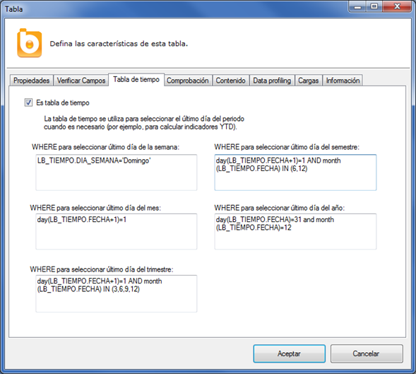
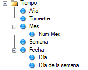
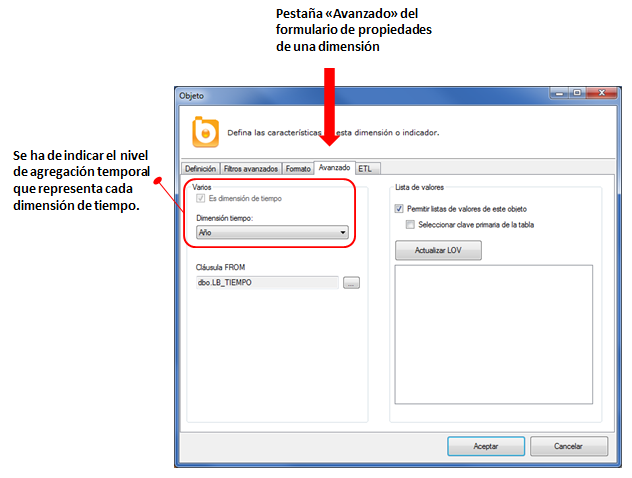
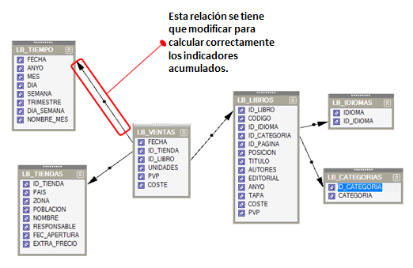
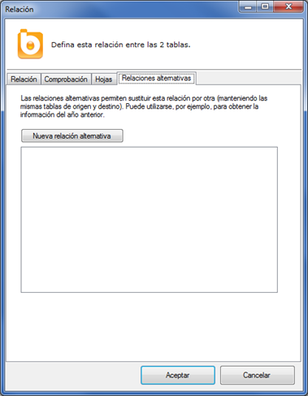
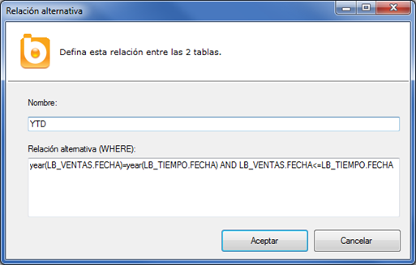
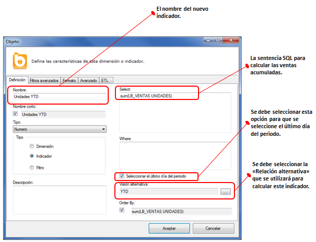
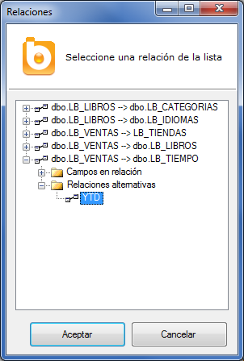
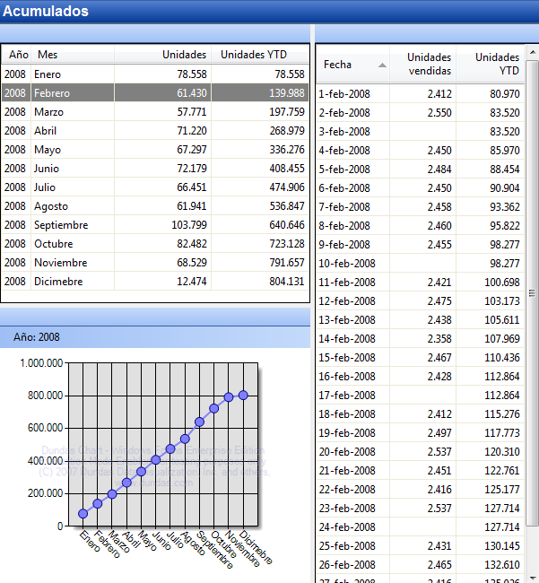

Indicadores acumulados
En muchos informes de negocio se utilizan indicadores acumulados desde principio de año o desde principio de mes. De este modo, se habla de las ventas YTD (year-to-date) para referirse a las ventas desde el 1 de enero, o se habla de las ventas MTD (month-to-date) para referirse a las ventas desde el primer día del mes.
Otros indicadores acumulados habituales son los totales móviles y las medias móviles. De este modo, se habla de ventas TAM (total-anual-móvil) para referirse a las ventas de los últimos 12 meses, o se habla de la venta media de los últimos 7 días...
Otros indicadores acumulados semejantes son los saldos. El saldo de una cuenta corriente no es la suma de los saldos de cada día (es la suma de los movimientos desde el principio de la historia hasta la fecha estudiada). El personal de una empresa tampoco es la suma de las plantillas de cada mes... es la suma de las altas y bajas desde el principio de la historia.
Todos estos indicadores acumulados pueden ser definidos en el catálogo de Bingo Intelligence sin necesidad de tenerlos precalculados ni de modificar la base de datos.
Los pasos para definir estos indicadores son:
- Configurar la tabla de tiempo
- Configurar las dimensiones de tiempo
- Definir las “relaciones alternativas”
- Definir los “indicadores acumulados”
Configurar la tabla de tiempo
Para calcular los indicadores acumulados es necesario identificar la tabla de tiempo y definir una serie de filtros temporales. Para ello, se tiene que abrir el formulario de propiedades de la tabla de tiempo y rellenar la pestaña de configuración denominada “Tabla de tiempo”:

En ese formulario se han definido un conjunto de sentencias WHERE que permiten seleccionar el último día de diferentes periodos (el último día de la semana, el último día del mes, etc.). Esta información puede estar precalculada en campos booleanos de la tabla de tiempo (ES_ULTIMO_DIA_SEMANA, ES_ULTIMO_DIA_MES, etc.), o se puede utilizar el dialecto SQL de cada gestor de base de datos para calcularlo en función del resto de campos de la tabla de tiempo.
Estos filtros son necesarios para que Bingo Intelligence genere la sentencia SQL correcta independientemente del nivel de detalle solicitado. Por ejemplo, para calcular las ventas YTD semana a semana, se tienen que considerar todas las ventas desde el primer día de año, hasta el domingo de cada semana.
Configurar las dimensiones de tiempo
Además de configurar la tabla de tiempo, se tiene que indicar el “nivel de agregación” que representa cada dimensión de tiempo del universo. En el catálogo de LA_BIBLIO, por ejemplo, se han definido estas dimensiones de tiempo:

Para configurarlas se tiene que acceder a sus “Propiedades” y en la pestaña “Avanzado” indicar el nivel de agregación que cada dimensión representa. De este modo se debe configurar la dimensión “Año”:

Esta operación debe realizarse para todas las dimensiones de tiempo definidas en el catálogo.
Bingo Intelligence tendrá en cuenta esta información para aplicar el filtro adecuado (entre los definidos en la configuración de la tabla de tiempo) en función de las dimensiones incluidas en cada consulta.
Definir las relaciones alternativas
Para calcular un indicador YTD se debe relacionar cada fecha de la tabla de tiempo con todas los días anteriores (del mismo año) de la tabla de hechos. Esto se realiza definiendo una “relación alternativa” entre la tabla de tiempo y la tabla de hechos.

Para definir la relación alternativa se debe abrir el formulario de “Propiedades” de esa relación (desde el menú contextual situado en el centro de la relación). Las relaciones alternativas se administran desde la pestaña “Relaciones alternativas”.

Para crear una relación alternativa se debe hacer clic en el botón “Nueva relación alternativa”, y aparecerá la siguiente ventana desde donde podremos modificar la relación:

En esta ventana se debe escribir la cláusula SQL que sustituirá a la cláusula original. Bingo Intelligence utilizará esta relación cuando se necesario.
Definir los indicadores acumulados
El cálculo de los “indicadores acumulados” es transparente para el usuario. Los usuarios que generan los informes únicamente ven una serie de “indicadores acumulados”, y Bingo Intelligence gestiona íntegramente la generación del SQL, haciendo uso de los filtros de la tabla de tiempo y de las relaciones alternativas si es necesario, y sin ninguna intervención particular de los usuarios.
Para que Bingo Intelligence construya correctamente las sentencias SQL, el diseñador del catálogo debe indicar qué relación alternativa debe utilizar cada indicador. Esto se especifica desde el formulario de propiedades del indicador. Para ello, creamos un nuevo indicador, y lo definimos de esta manera:

En el momento de seleccionar la relación alternativa, aparecerá un formulario con todas las relaciones del catálogo. Se debe buscar en esta lista la relación alternativa que se ha creado previamente. La relación alternativa aparecerá dentro la relación entre la tabla de tiempo (LB_TIEMPO) y la tabla de hechos del indicador que estamos definiendo (LB_VENTAS).

Una vez completados estos 4 pasos, los usuarios ya podrán utilizar este indicador, y Bingo Intelligence generará la sentencia SQL adecuada en cada caso.
Del mismo modo, se deben crear todos los indicadores acumulados que sean necesarios en el catálogo (Importe YTD, Ventas MTD, etc.).
Verificación del cálculo de indicadores acumulados
Para comprobar que Bingo Intelligence genera las sentencias SQL correctamente se puede utilizar el “Probador de consultas” . Sin embargo, en este caso, resulta más cómodo generar algunos informes utilizando este catálogo, y verificar la corrección de los números obtenidos:

Analizando los datos en pantalla se verifica que el cálculo se está realizando correctamente:
- Las ventas YTD en enero coinciden con las ventas de enero
- Las ventas YTD en febrero, son las ventas de enero más la de febrero.
- Las ventas YTD de cada mes, son las ventas del mes, más las ventas YTD del mes anterior.
- En la visión diaria, los datos también están bien calculados. Las ventas YTD del 1 de febrero, son las ventas YTD de enero más las ventas de ese día.
- Además, aparecen también los días en que no se ha vendido (por ejemplo, el 3 de febrero).
También podemos verificar que las sentencias SQL generadas son correctas. La consulta para obtener las ventas YTD mensuales es:
) AS Ano,
LB_TIEMPO.NOMBRE_MES AS Mes,
LB_TIEMPO.MES AS bi_orderby_Mes,
sum(LB_VENTAS.UNIDADES) AS UnidadesYtd
FROM LB_VENTAS_DIARIAS LB_VENTAS
INNER JOIN dbo.LB_TIEMPO LB_TIEMPO ON (year(LB_VENTAS.FECHA)=year(LB_TIEMPO.FECHA) AND LB_VENTAS.FECHA<=LB_TIEMPO.FECHA)
WHERE
cast(LB_TIEMPO.ANYO as char(4))='2008'
AND day(LB_TIEMPO.FECHA+1)=1
GROUP BY
cast(LB_TIEMPO.ANYO as char(4)),
LB_TIEMPO.NOMBRE_MES,
LB_TIEMPO.MES")
En la anterior consulta se ve que, efectivamente, se ha utilizado la relación alternativa, y que se ha incluido el filtro para mostrar las ventas acumuladas hasta el último día del mes.
La consulta para obtener las ventas YTD diarias del mes de febrero es:
 AS UnidadesYtd
FROM LB_VENTAS_DIARIAS LB_VENTAS
INNER JOIN dbo.LB_TIEMPO LB_TIEMPO ON (year(LB_VENTAS.FECHA)=year(LB_TIEMPO.FECHA) AND LB_VENTAS.FECHA<=LB_TIEMPO.FECHA)
WHERE
LB_TIEMPO.NOMBRE_MES='Febrero'
AND cast(LB_TIEMPO.ANYO as char(4))='2008'
GROUP BY
LB_TIEMPO.FECHA")
En este caso la consulta también es correcta. Se ha incluido la relación alternativa, y no ha sido necesario incluir el filtro del último día del periodo (ya que en este caso la consulta incluye el detalle diario).
Del mismo modo, se pueden añadir otras dimensiones o filtros en la consulta. Con este mismo indicador YTD, se podrían calcular las ventas YTD de una determinada editorial o de un conjunto de tiendas... tanto a nivel diario, semanal, o mensual... y Bingo Intelligence generará la consulta adecuada en cada caso.
Este método es muy flexible y puede ser útil para muchas necesidades habituales. Sin embargo, el rendimiento puede verse penalizado si la tabla de hechos tiene muchos millones de registros. En este caso, se debe considerar la creación de tablas agregadas. De hecho, en este ejemplo, las dos consultas se han aprovechado de la existencia de la tabla agregada LB_VENTAS_DIARIAS.